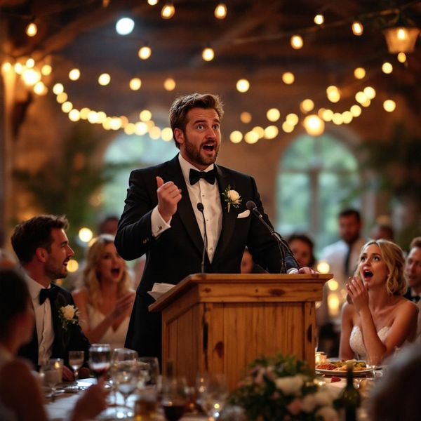

Wedding Speeches
Show Notes
Every wedding has that moment: the mic comes out, the room goes quiet, and suddenly someone’s cousin thinks they’re headlining a comedy special. Wedding speeches are supposed to be heartfelt, short, and maybe a little funny. Instead, they’re often long, chaotic, and dangerously close to revealing the groom’s college nickname.
Today on Wedding Police, we’re stepping in before someone says “one more quick story.” From best man roasts that go too far to mothers with 12-minute thank-you lists, we’re breaking down the crimes, the clichés, and the speeches that should’ve stayed in the group chat.
🚨 Never Miss a Case
New episodes every week. Follow The Wedding Police so the next one lands in your feed.
Enjoying it? A quick rating on Apple Podcasts or Spotify helps new couples find the show.